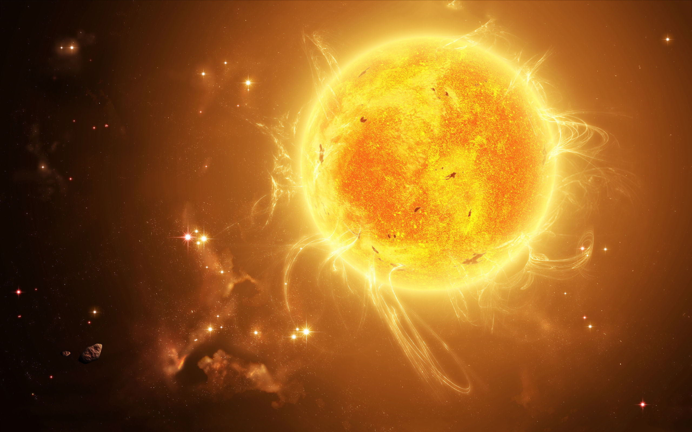
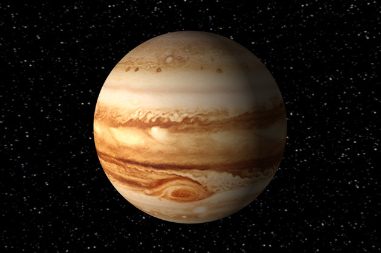

Planet
KITE YOU CAN KNOW ABOUT SOLAR SYSTEM !

Earth is the third planet from the Sun and the only place known in the universe where life has originated and found habitability. While large volumes of water can be found throughout the Solar System, only Earth sustains liquid surface water. Approximately 70.8% of Earth's surface is made up of the ocean, dwarfing Earth's polar ice, lakes, and rivers. The remaining 29.2% of Earth's surface is land, consisting of continents and islands. Earth's surface layer is formed of several slowly moving tectonic plates, which interact to produce mountain ranges, volcanoes, and earthquakes. Earth's liquid outer core generates the magnetic field that shapes the magnetosphere of Earth, deflecting destructive solar winds.

The Sun, or Sun (Chinese: 太陽), or Japan (Chinese: 日), is the star at the center of the Solar System, accounting for about 99.8% of the Solar System's mass. The Earth and other celestial bodies such as planets, asteroids, meteorites, comets and dust orbit the Sun. The average distance between the Sun and Earth is approximately 149.6 million kilometers (1 AU), so it takes 8 minutes and 20 seconds for sunlight to reach Earth. Over the course of a year, this distance varies from 147.1 million kilometers (0.9833 AU) at perihelion (approximately January 3), to as far as 152.1 million kilometers (1.017 AU) at aphelion. (around July 4th). Solar energy in the form of light Supports most life on Earth through photosynthesis, and controls Earth's climate and weather. The composition of the Sun includes hydrogen (about 74% by mass, or 92% by volume), helium (about 24% by mass, 7% by volume), and small amounts of other elements, including iron, nickel, oxygen, silicon, sulfur, crushed, carbon, neon, calcium and chromium. The Sun has a popularity class G2V. G2 means that it has a surface temperature of approximately 5,778 K (5,505 °C) which makes it white and often yellow when viewed from the Earth's surface by scattering of gases. It is this scattering of light at the blue end of the spectrum that makes the sky blue. The solar spectrum contains neutral metal and ionization lines as well as very weak hydroelectric lines. V (Roman 5) in the spectral class indicates that the Sun, like most stars, is a main sequence star. This means that it generates energy by nuclear fusion of hydrogen nuclei into helium. There are over 100 million G2 class stars in our Milky Way galaxy. Once considered a small star with fairly normal visibility, in fact, according to current knowledge, the Sun is brighter than 85% of the stars in the Milky Way, with most of the stars being faint red.

Mercury (Mercury) or Mercury (Chinese: 水星) is the smallest and closest
planet to the Sun of the eight planets in the Solar System,[a] with an orbital period equal
to about 88 Earth days. Seen from Earth, the planet appears with an orbital conjunction period
of approximately 116 days, and is much faster than the other planets. This fast speed led the
Romans to name the planet Mercurius, the god of communication and speedy messenger. In Greek mythology
the name of this god is Hermes (Ερμής). The Vietnamese name of this planet is based on the name given
by China, chosen according to the water element in the five elements.
Because the planet has almost no atmosphere to retain heat, Mercury's surface experiences the largest
temperature variation of any planet, varying from 100 K (−173 °C; −280 °F). at night to 700 K (427 °C; 800 °F)
during the day. Mercury's axis of rotation has the smallest inclination in the Solar System
(about 1⁄30 degrees), but the planet has the largest orbital eccentricity.[a] At apogee, Mercury
is far from the Sun. The sky is 1.5 times larger than the planet at the perigee. The surface of
the planet has many craters that look like the surface of the Moon, and the planet was no longer
geologically active billions of years ago.

Venus is classified as a rocky planet and is sometimes considered a "sister planet" to Earth due to its size, gravitational acceleration, and orbital parameters similar to Earth. However, it has been shown that it is very different from Earth in other ways. Venus is surrounded by a thick layer of highly reflective clouds containing sulfuric acid, and making its surface impossible to observe under visible light wavelengths. The density of air in its atmosphere is the largest of the four terrestrial planets, composed mainly of carbon dioxide. Atmospheric pressure at the planet's surface is 92 times higher than that of Earth. With an average surface temperature of 735 K (462 °C), Venus is the hottest planet in the Solar System. It does not have a carbon cycle to return carbon to the surface rocks and soils, so it is impossible for any organic organism to absorb it in the biomass. Some scientists have suggested that Venus had oceans in the past, but evaporated as the planet's temperature increased due to the out-of-control greenhouse effect. Water may have been photolyzed, and because there is no planetary magnetosphere, free hydrogen could escape into space by the action of the solar wind. The entire surface of Venus is an arid desert of rock and dust, and there are probably still active volcanoes on the planet.

Jupiter contains mainly hydrogen and helium - making up a quarter of its mass,
although helium makes up only a tenth of the molecules. There may be a rocky core in the planet
containing heavier elements, but unlike other gas giants, Jupiter does not have a solid, shaped
surface. Because of its rapid rotation, the planet's shape is spheroidal (it bulges slightly at the
equator). The outermost layer of the atmosphere shows up with bands of clouds at different heights,
as a result of aerodynamic turbulence and interaction with storms at the edge. A striking feature of
its images is the Great Red Spot, a massive storm known to have existed since at least the 17th century
when astronomers first observed it with telescopes. Surrounding Jupiter is a faint ring system as well
as a strong magnetosphere. There are at least 80 natural satellites orbiting it, including the four
largest, called the Galileo satellites, first observed by the scientist Galileo Galilei in 1610. Ganymede,
the largest, has larger diameter than Mercury.
Several spacecraft have explored Jupiter, including Pioneer and Voyager in flybys and the
Galileo spacecraft that orbited the planet. The most recent spacecraft to fly by Jupiter on
its way to Pluto - New Horizons passed in late 2007. The spacecraft uses the assistance of
Jupiter's gravity to increase its speed. NASA's Juno now arrived on July 5, 2016. In the
future, there is an ESA mission to explore the Galileo satellites in general and Europa in particular.
Categories
Tags
LATEST POSTS
HOW MANY GALAXIES ARE IN THE KNOWN UNIVERSE?
There are close to 170 billion, or recent research estimates, 2 billion billion galaxies in the observable universe. The numbers are between 1,000 and 100,000 parsecs in diameter, and the two neighboring galaxies are often several million parsecs (or megaparsecs) apart.
CLOUDY WEATHER ON TITAN IS MADE OF METHANE
Fusce vel mauris vel nulla pellentesque egestas. In vestibulum risus nec nisi...
IS THE EARTH THE CENTER OF THE CELESTIAL SYSTEM?
The position of the Earth is only an insignificant part of the universe, despite recent theories that topple the foundations of modern cosmology, according to a University of British Columbia research team. The book On the Revolutions of the Heavenly Spheres by the Polish astronomer Nicolaus Copernicus, in 1543, changed the concept from Earth as the center of the universe to Earth as just a planet orbiting the sun. Since then, generations of astronomers have expanded on this idea and formulated the Copenic Theory, which holds that our Earth in the universe is just a perfectly normal planet. Although the Copenic Theory has become the cornerstone of modern cosmology, finding evidence that the Earth is a non-specific part of the Universe has proved quite difficult. In 1998, studies of cosmic explosions called "type Ia supernovae" showed that the expansion of the universe was accelerating, caused by the repulsion of a mysterious "dark energy" source. However, some scientists have put forward a different theory, stating that the Earth is located near the center of a giant "bubble" that is mostly devoid of matter, and goes against the Copenic Theory. Thereby, gravity would create the illusion of rapid expansion, similar to the effect of dark energy on supernova observations.
OTHER PLANETS